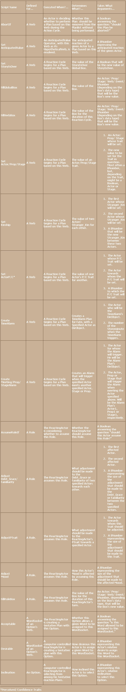

The following table lists the various types of Scripts used in Storytronics. For each Script type, it details what storyworld entity the Script is attached to, when the Script is executed, what the Script determines and what arguments it takes.
